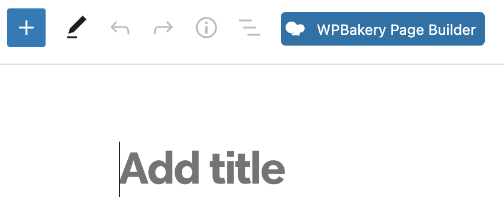
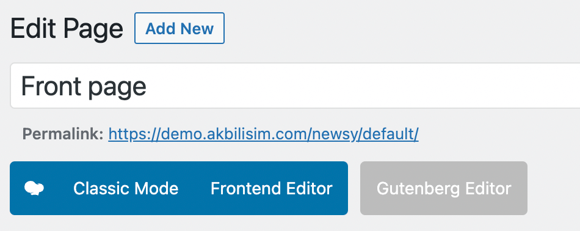
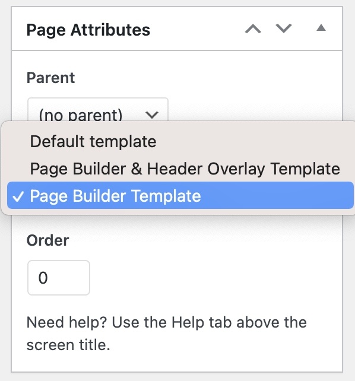
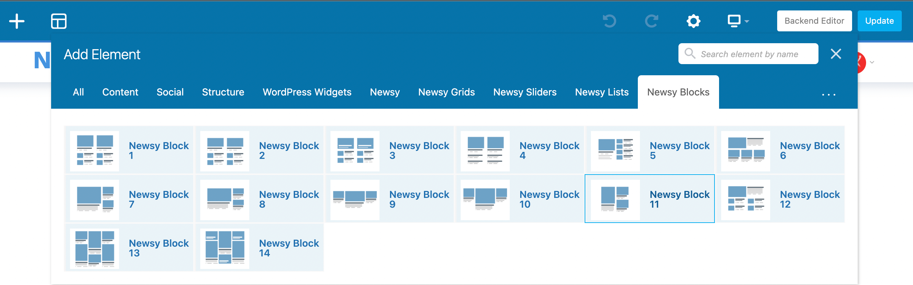
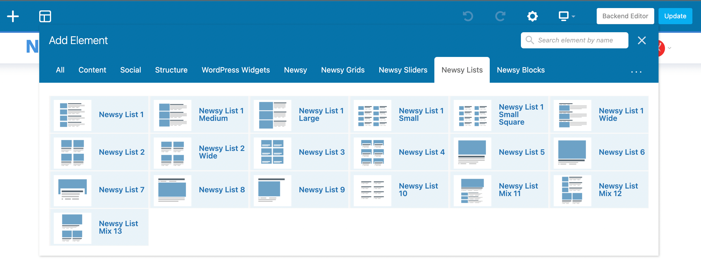
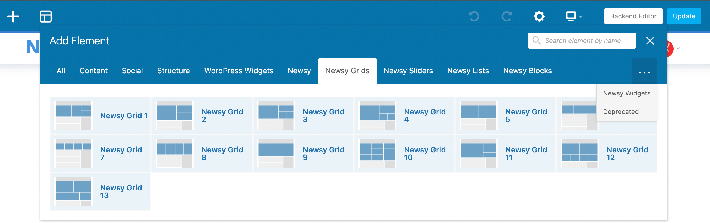
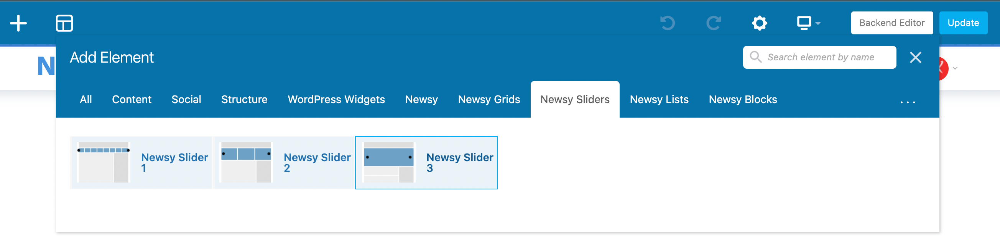
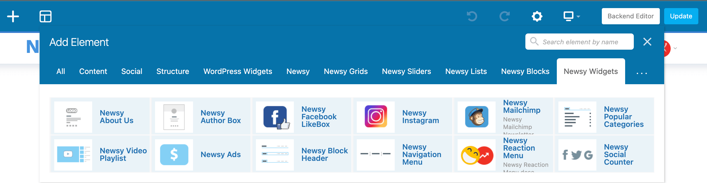

The WPBakery Page Builder (formerly Visual Composer) is one of the most popular drag & drop page builder plugins.
Install & Activate
To enable this page builder on your website, you just need to install WPBakery Page Builder plugin. You can easily install and activate this plugin from Plugin Dashboard by go to Newsy Dashboard → Install Plugins.
Setting
After activating the plugin, its configuration page will be accessible in the WP Admin main menu. The plugin’s default configuration is enough to start working with the builder. No extra configuration steps are required.
Usage
To compose a static page using builder elements, please do these simple steps:
- Create a new page or choose one of the existing and go to its edition screen.
-
If the plugin is activated and was loaded properly, you should
see the builder’s toolbar. Click
"WPBakery Page Builder" button.
 -
Under the page title. Click the
Backend Editor if you like to use the editor on
the backend side. Click the Frontend Editor if
you like to use the live frontend editor.
 - Start adding elements, use drag & drop UI to change their position, etc.
-
In the right side, Select
Page Builder Template. If you plan to use Frontend Editor, you should select this
option first then draft save the page after that you can go to
Frontend Editor.
 - Save the page.
Newsy Elements
Here is the list of Newsy Elements in WPBakery Page Builder:
- Newsy Blocks (14 item)
- Newsy Lists (18 item)
- Newsy Grids (13 item)
- Newsy Sliders (3 item)
- Newsy Widget Blocks (Video Playlist, social counter, newsletter, instagram) (7 item)
1. Newsy Blocks
As you can see on the image below, on
Newsy Blocks group tab we provide several
WPBakery Page Builder elements that you can use.

Please check the following explanation below about Visual Composer element on Newsy Blocks group tab :
General Option of Newsy Block
Header Tab
-
Block Title
Insert text for main title of block. -
Block Title URL
Insert url link for title of block. -
Block Title Font Size
Insert text size for title of block. -
Block Title Line Height
Insert text line height for title of block. -
Block Icon
Select icon for title of block title. -
Block Header Type
Choose header type for block. -
Block Header Background
Set background color of header module block. Please note, this option may not work on certain header type. -
Block Header Title Color
Set text color of header block. Please note, this option may not work on certain header type. -
Block Header Title Background Color
Set text color of header block. Please note, this option may not work on certain header type. -
Block Header Line Color
Set bottom line color of header block. Please note, this option may not work on certain header type. -
Block Accent Color
Set accent color of block. This will set color of various block elements.
Filters Tab
-
Categories
Add category filter for block.
-
Number of Post
Set number of post for content block. -
Offset posts
Set number of post offset (start of content) of block. -
Order By
Choose sorting method for content of block. -
Filter by Time
Set times of post for content block. -
Filter by Post Types
Choose post type for content of module block. -
Filter by Posts
Include posts that you want to show for content block. It can be done firstly by searching post by inputing title, then clicking the search result, and finally you will have your post. To exclude authors from this block click "-" button. -
Filter by Authors
Include posts that you want to show for content block. It can be done firstly by searching author by inputing name, then clicking the search result, and finally you will have your author. To exclude authors from this block click "-" button.
-
Filter by Taxonomies
Filter multiple taxonomies by search. To exclude taxonomies from this block click "-" button. -
Taxonomies Relation
Choose filtered by taxonomies relation type.
Pagination Tab
-
Pagination Type
Choose pagination type for block. -
Show pagination number label
Enable labels for Next/Prev pagination type.
Tabs Tab
-
Categories as Tab
- Selected Categories as Tab
Select multiple categories for header tabs. -
Sub Categories as Tab
This will use sub categories for Filters tab > Categories field. -
Taxonomies as tab
Select multiple taxonomies for header tabs. -
Order by options as Tab
Choose order by options you want see or leave empty for all options. -
Tabs "All" Text
Enter here custom text for block header tabs more menu.
Module Tab
In this section you will see modules for block. You can enable Override Module Parts? option for overriding module parts for this block.
Design Tab
-
Block Extra Class
Select block extra classes. Ex: You can set boxed style block or dark style block with these predefined classes or you can add custom CSS classes. -
Block Width
Please choose width of the column you want to use on this block. 1 Block represents 4 column. -
Block Custom ID
Block custom CSS ID. Useful if you want apply custom style for this block. -
Block Item Margin
Select loop block items space size. -
CSS box
Set style for block.
2. Newsy Lists
As you can see on the image below, on Newsy Lists group tab we provide several WPBakery Page Builder elements that you can use.
Please check the Newsy Blocks explanation above about Visual Composer element on Newsy Lists group tab. Options are same for both.
3. Newsy Grids
As you can see on the image below, on Newsy Grids group tab we provide several WPBakery Page Builder elements that you can use.
General Tab
-
Overlay Gradient
Select slider items overlay style. -
Grid Height
Set height on pixel in px for desktop, leave empty to use default number.
Header Tab
Please check the Newsy Blocks explanation above about Visual Composer element on Header tab. Options are same for both.
Filters Tab
Please check the Newsy Blocks explanation above about Visual Composer element on Filters tab. Options are same for both.
Design Tab
Please check the Newsy Blocks explanation above about Visual Composer element on Design tab. Options are same for both.
4. Newsy Sliders
As you can see on the image below, on Newsy Sliders group tab we provide several WPBakery Page Builder elements that you can use.
General Tab
-
Overlay Gradient
Select slider items overlay style. -
Block Color
Set accent color of block. This will set color of various block elements.
Slider Tab
-
Number of slides
Set number of post for content slider. -
Slider Slide duration
Set auto play duration of slide in mili second. -
Slider Scroll Items
The number of items you want to see on the screen. -
Slider Item Margin
Margin-right(px) on item.
-
Slider Stage Padding
Padding left and right on stage (can see neighbours). -
Slider Nav
Hide next/prev buttons or select a style. - Slider Dots
Show dots navigation. - AutoPlay
Autoplay slider. -
AutoPlay Speed
Set autoplay speed. Please note, this option will appear and work if you enable auto play slider option above. -
AutoPlay Animation Speed
Set autoplay animation speed. Please note, this option will appear and work if you enable auto play slider option above.
-
Slider Center Mode
Enable centered position. -
Loop Items
Infinity loop. Duplicate last and first items to get loop illusion.
Filters Tab
Please check the Newsy Blocks explanation above about Visual Composer element on Filters tab. Options are same for both.
Design Tab
Please check the Newsy Blocks explanation above about Visual Composer element on Design tab. Options are same for both.
5. Newsy Widgets
As you can see on the image below, on Newsy Widgets group tab we provide several WPBakery Page Builder elements that you can use.

Newsy About Us
-
Image
On this option, you can choose image or logo on the block.
-
Image Text (alt)
On this option, you can choose image or logo alt attribute.
-
About Title
On this option, you can choose title on the block.
-
Description
On this option, you can choose description on the block.
Newsy Author Box
-
Select Author to display
On this option, you can choose author you want to display.
-
Show Cover
On this option, you can choose show or hide the cover image on the author box.
-
Show Description
On this option, you can choose show or hide the description on the author box.
-
Show Social Links
On this option, you can choose show or hide the social links on the author box.
-
Show Extra Elements
On this option, you can choose show or hide the extra elements like badges on the author box.
-
Description Length
On this option, you can choose description words length on the author box.
Newsy Facebook LikeBox
-
Title
On this option, you can choose title on the block.
-
Facebook Page
On this option, you can enter facebook page url you want show.
-
Show Posts
On this option, you can choose show or hide the latest posts on the like box.
-
Show Faces
On this option, you can choose show or hide the latest liked profiles on the like box.
-
Language
On this option, you can choose language on the like box.
Newsy Instagram
-
Set Column
Setup the number of feed columns that you want to show for Instagram feed footer.
-
Set Row
Setup the number of feed rows that you want to show for Instagram feed footer.
-
Items Margin
On this option you can choose space between rows and columns of your Instagram feed.
-
Follow Button Text
On this option you can insert text for Instagram follow button. Leave blank if you don’t want to show it.
-
Open New Tab
Enable this option if you want to open link in new tab when Instagram follow button.
Newsy Mailchip
-
Title
On this option, you can choose title on the block.
-
Title Icon
On this option, you can choose title icon on the block.
-
Message
On this option, you can choose message on the block.
-
Image
On this option, you can choose message on the block.
-
MailChimp List URL
On this option, you can set MailChimp list URL on the block.
-
Input Below Text
On this option, you can choose text on the input below.
-
Style
On this option, you can choose style on the block.
-
Text Align
On this option, you can choose text align on the block.
-
Form Layout
On this option, you can choose form layout on the block.
-
Block Color
On this option, you can set colors on the block.
Newsy Popular Categories
-
Count
On this option, you can choose size of categories.
-
Order By
On this option, you can choose order by of categories.
-
Order
On this option, you can choose order of categories.
-
Columns
Setup the number of category columns that you want to show for the block.
-
Show Category Post Count
On this option, you can choose show or hide the category posts count on the block.
-
Show Category Icon
On this option, you can choose show or hide the category icon on the block.
-
Show Empty Categories
On this option, you can choose show or hide the empty categories on the block.
-
Include Categories
On this option, you can choose show specific categories on the block.
-
Excluded Categories
On this option, you can choose hide specific categories on the block.
Newsy Video Playlist
-
Video Playlist Layout
On this option, you can choose preferred layout on the video playlist.
-
Video Playlist Scheme
On this option, you can choose preferred dark/light scheme on the video playlist.
-
Video Playlist Color
On this option, you can choose preferred color on the video playlist.
Newsy Ads
-
Google AdSense Ads
Client ID: Insert data ads client or Google ads client content.
Slot ID: Insert data ads slot or Google ads slot content.
Desktop Size: Choose ads size for desktop device. We recommend you to use Auto on this option.
Tablet Size: Choose ads size for tablet device. We recommend you to use Auto on this option.
Phone Size: Choose ads size for mobile phone device. We recommend you to use Auto on this option. -
Image Ads
Image: Upload an image for advertisement. We recommend you to use 970×90 image size for best result.
Image Link: Insert url link where this advertisement image will be heading.
Alternate Text: Insert alternate text for advertisement image.
Open New Tab: Turn on this option to enable open in new tab when advertisement image clicked. -
Script Code
Code: Insert Ads:Content Discovery Ads like Taboola, Outbrain or Revcontent, HTML5 Ads, Custom HTML/CSS/JS Ads and iFrames.
Newsy Block Header
-
Block Title
Insert text for main title of block. -
Block Title URL
Insert url link for title of block. -
Block Title Font Size
Insert text size for title of block. -
Block Title Line Height
Insert text line height for title of block. -
Block Icon
Select icon for title of block title. -
Block Header Type
Choose header type for block. -
Block Header Background
Set background color of header module block. Please note, this option may not work on certain header type. -
Block Header Title Color
Set text color of header block. Please note, this option may not work on certain header type. -
Block Header Title Background Color
Set text color of header block. Please note, this option may not work on certain header type. -
Block Header Line Color
Set bottom line color of header block. Please note, this option may not work on certain header type. -
Block Accent Color
Set accent color of block. This will set color of various block elements.
Newsy Navigation Menu
-
Select Menu
Select to menu you want to display.